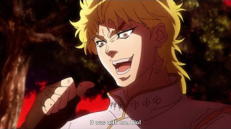
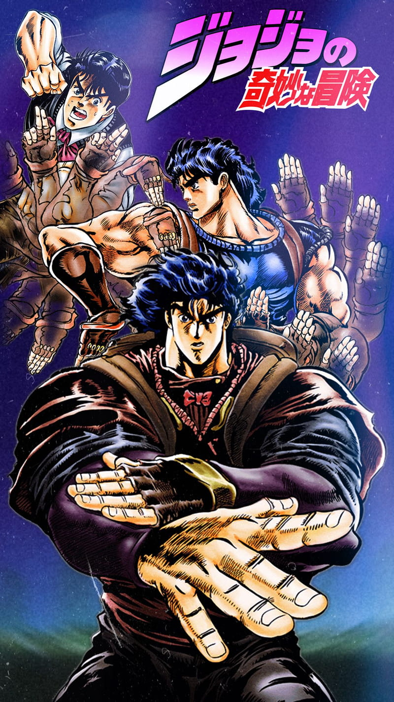
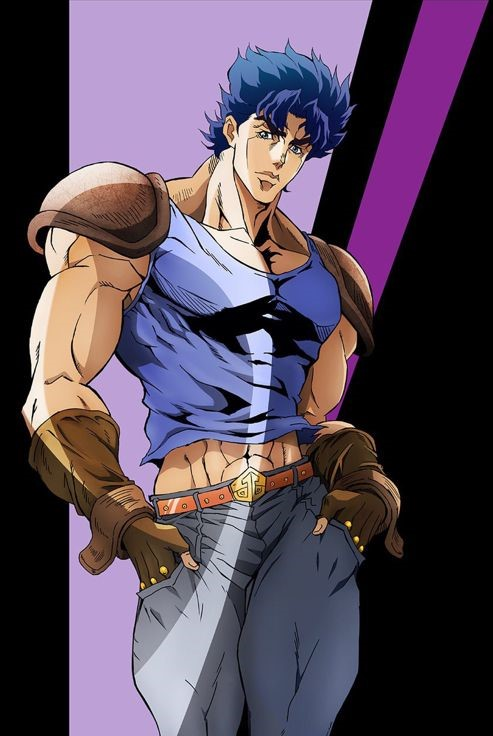
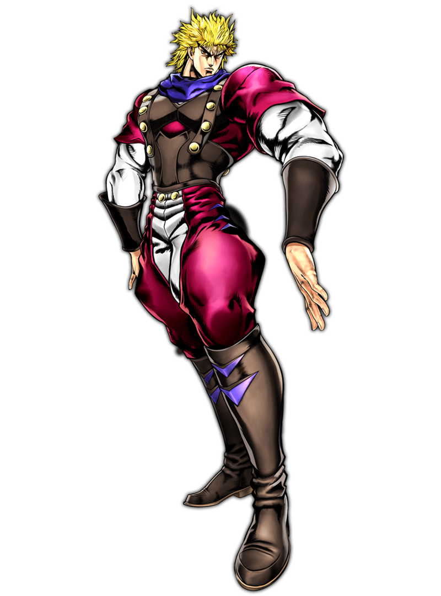

Phantom Blood is the first part of JoJo's Bizarre Adventure. It was serialized in Weekly Shonen Jump from 1986 to 1987 and adapted into a movie in 2007 by Studio A.P.P.P. and a 2012 TV series by David Productions. This part follows the adventures of a wealthy British man named Jonathan Joestar, nicknamed JoJo by his friends, and his adoptive brother, Dio Brando. The main conflict in this part stems from Dio's betrayal of the Joestar family and his transformation into a vampire. After Jonathan burns down his ancestral mansion in an attempt to destroy Dio, he is instructed in the way of Hamon by Will Antonio Zeppeli, a martial art that harnesses the power of sunlight to destroy vampires. As Jonathan becomes more adept at Hamon by defeating Dio's underlings and recruiting allies, Dio grows increasingly knowledgeable about his vampiric powers. In their final battle, Jonathan appears to defeat Dio. However, three months later, while on his honeymoon cruise with Erina, Jonathan is ambushed by Dio, who attempts to restore his body by stealing Jonathan's. Jonathan succumbs to his injuries during the final battle, dying while holding Dio's severed head. Erina escapes the exploding ship by hiding in Dio's coffin and is later rescued near the Canary Islands.
The story begins with Jonathan Joestar and his father, George Joestar, wounded in a stagecoach accident that kills Jonathan's mother. Dio's father, Dario Brando, finds the wreckage and attempts to loot their bodies; however, George perceives his actions as a rescue attempt and promises Dario a favor in return for "saving" their lives. Years later, after Dario's wife's death, he is left to raise Dio on his own, which causes Dio to develop a twisted personality due to his father's abusive behavior. On his deathbed, Dario instructs Dio to cash in the favor and live with the Joestars. After Dario's funeral, during which Dio spits on his father's grave, Dio moves to the Joestar manor and is adopted by George Joestar. Immediately, Dio hatches a scheme to become the heir to the Joestar fortune and begins to torment Jonathan, hitting his dog, Danny, and violently beating him in a boxing match. Dio also tries to gain George's favor by displaying superior gentlemanly qualities and academic skills compared to Jonathan. When Jonathan finds solace in his budding relationship with Erina, Dio assaults her, stealing her first kiss. Enraged, Jonathan punches Dio hard enough to draw blood, which splatters onto an ancient stone mask in the mansion, causing spikes to extend. Both Jonathan and Dio believe the mask to be a torture device. Later, Dio burns Danny alive in an incinerator, biding his time to gain Jonathan's trust.
Years pass, and Dio and Jonathan appear to grow closer, both becoming star students and athletes nearing graduation. However, George Joestar falls gravely ill, and Jonathan grows suspicious of Dio's overly caring attitude. Finding a letter from Dario Brando describing his symptoms before his death—symptoms identical to George's—Jonathan suspects foul play. He ventures into the slums of London and befriends the criminal Robert E.O. Speedwagon. Meanwhile, Dio, aware of Jonathan's investigation, attempts to dispose of him by using the mask's spikes and making it appear accidental. To test the mask's effect, Dio uses it on a drunkard, who is transformed into a vampire with superhuman power and eternal youth. The vampire nearly kills Dio but is destroyed by the rising sun. Returning to the Joestar mansion, Dio is ambushed by police. He fatally stabs George Joestar and uses his blood to activate the mask, transforming himself into a vampire. A fight ensues, with Dio killing the policemen and setting the Joestar mansion ablaze. Jonathan ultimately impales Dio on the mansion's Statue of Love and leaves him to die in the fire.
While hospitalized, Jonathan and Erina's relationship deepens, and she becomes his nurse. Later, they meet Will Antonio Zeppeli, who teaches Jonathan the ancient art of Hamon, a technique used to destroy vampires by converting the body's energy into sunlight. Under Zeppeli's mentorship, Jonathan quickly masters Hamon. They are ambushed by Dio, who has healed from his injuries and raised a zombie army. Dio demonstrates a freezing technique designed to counter Hamon users, forcing Jonathan and Zeppeli to retreat. Confident in his strength, Dio creates two powerful zombie knights, Bruford and Tarkus, to kill Jonathan's group. Bruford fights Jonathan in an honorable duel but is purified by Hamon. Before dying, Bruford thanks Jonathan and gifts him a sword named "Luck," which Jonathan renames "Pluck." Tarkus then traps Jonathan in a chained deathmatch. On the verge of death due to a lack of oxygen, Jonathan is saved by Zeppeli, who sacrifices his life and transfers his energy to Jonathan, allowing him to defeat Tarkus. Zeppeli dies peacefully in Jonathan's arms, bidding farewell to the group.
Later, Jonathan teams up with three more Hamon users—Tonpetty, Dire, and Straizo—summoned by a letter from Zeppeli. Together, they infiltrate Dio's castle and defeat his zombie horde. During the battle, Dio kills Dire, and the final fight between Jonathan and Dio begins. Initially, Dio appears to have the upper hand with his freezing technique, but Jonathan outsmarts him. By setting himself ablaze to counter Dio's technique, Jonathan uses the Hamon-infused Pluck to split Dio apart. Unaware that Dio has survived by severing his head, Jonathan and his group celebrate, believing they have saved the world. Three months later, on their honeymoon cruise, Jonathan and a now-pregnant Erina are ambushed by Dio, who severely injures Jonathan. Unable to breathe due to his injuries, Jonathan uses the last of his Hamon to jam the ship's engine, triggering an explosion. Dio offers Jonathan eternal life in exchange for salvation, but Jonathan, already resigned to his fate, ignores him. Erina escapes the sinking ship in Dio's coffin and is rescued two days later near the Canary Islands. She vows to keep Jonathan's legacy alive.




Comments